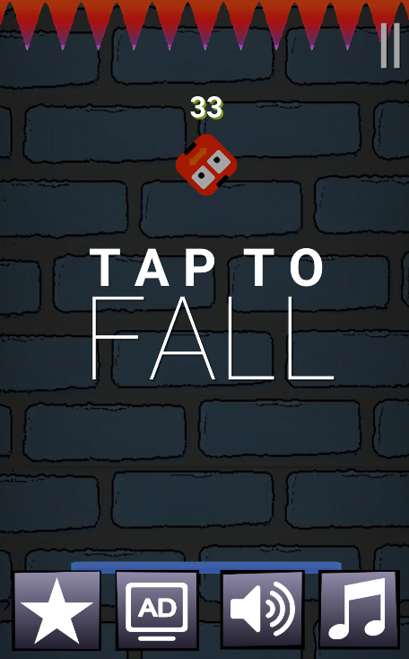
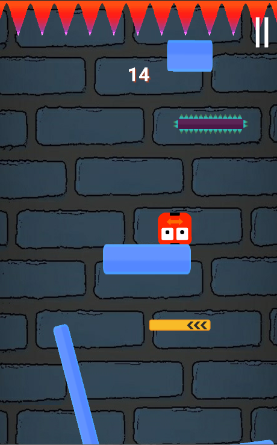

Android Game
Dubbed "Fall Forever" this is a Android game I created and published in the summer with the
goal of seeing a piece of software from start to commercialization.
View source code
|
Google Play Store
Design
I realized that many projects fail due to overambition. I didn't want this project to be one of those.
I came up with a very simple game design: Vertically scrolling block that try and push the character to the top
of the screen to end the game. The game also runs google ads via admob.
Production
Fall Forever runs on the Unity 2D game engine. I programmed and testing the game and ad functionality
with the Unity editor and C#. I organized the code into several scripts, each with its own process.
I created all the assets myself using Paint.net.
Next steps
I don't plan on creating another mobile game, but I learned a lot by seeing this project to completion.

Main menu

Gameplay